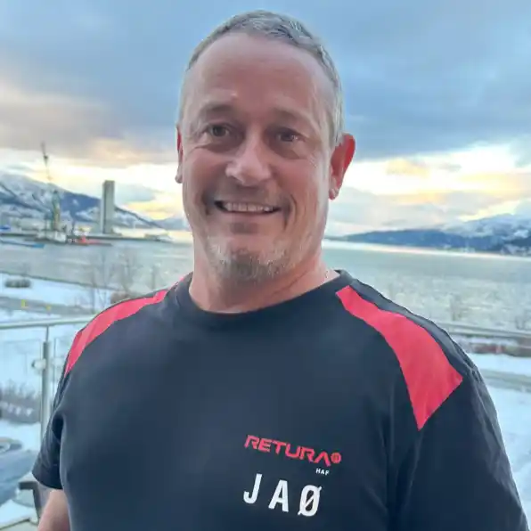
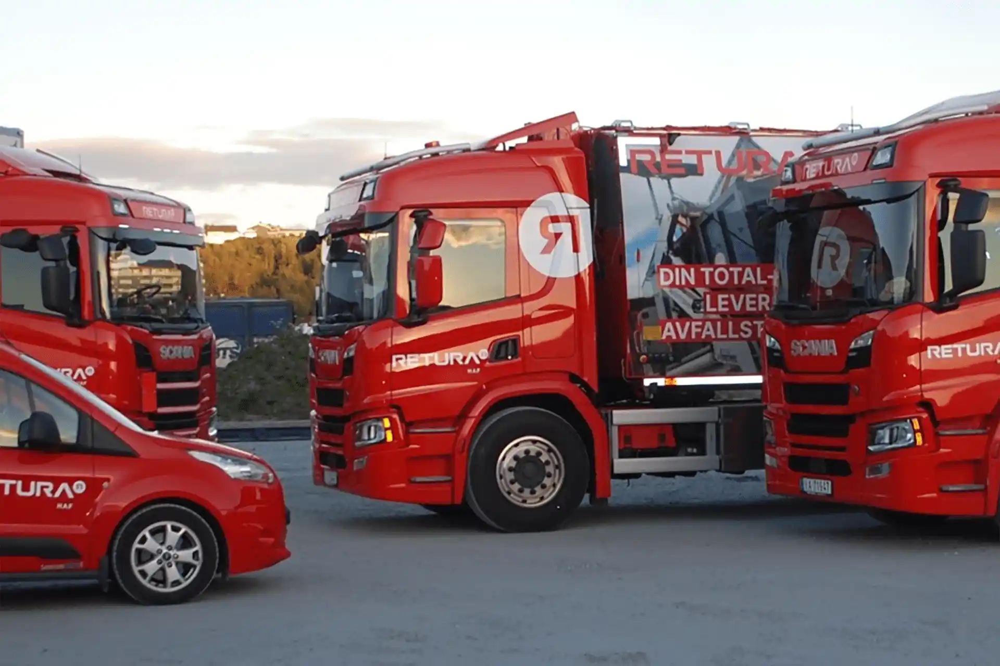
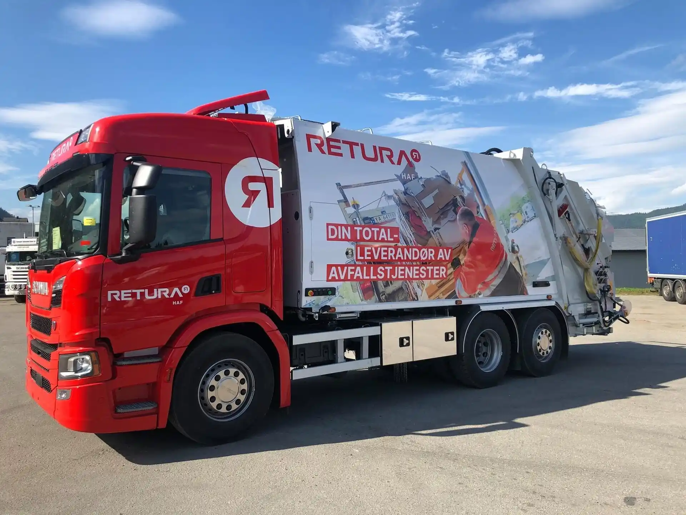

Publisert:

– Nei, overhodet ikke, sier John Arne Aspelund Øverli om hvorvidt jobben var drømmejobben. Han er utdannet helsefagarbeider, men i dag kjører han rundt i komprimatorbil som salgsrenovatør hos Retura HAF.
Etter ungdomsskolen gikk han på yrkesskolen, på tømrerlinja. Ingen spesielle lærere påvirket valgene hans den gangen. Veien fram til første ordentlige jobb beskriver han som svingete og humpete, «men det gikk godt».

Bilparken til Retura HAF, der John Arne har jobbet de siste tre årene.
Det er ikke én enkelt erfaring eller ett valg som har ført ham dit han er i dag. Underveis har han ombestemt seg mange ganger, og har vært alt fra assistent på røntgenavdelingen til søppelmann. Det siste har han holdt på med de siste tre årene.
Arbeidsdagen går ut på å kjøre rundt og tømme søppeldunker, og komprimere avfallet i bilen. Den største utfordringen er ikke selve tømmingen, men folk som parkerer under containerne, slik at de ikke kommer til. På toppen av det kommer vær og føre: snø, is og vind.
– Vi tar det som regel med et smil. Så går vi ut og måker snø og ber kundene flytte bilene sine, sier Øverli.
Han mener det viktigste i jobben er å være serviceinnstilt og å følge godt med i trafikken. Selv har han ikke merket så mye til endringer i bransjen, men han tror at renovasjonsbilene snart alle må bli elektriske. Det har både pluss- og minussider, mener han.
En god dag på jobben er når han treffer trivelige kunder og får et smil, et vink og et blunk på veien. Det er også det som motiverer ham mest, sammen med hyggelige kolleger, folk han møter i trafikken og frisk luft.
– Det er ganske så trivelig, sier han.
Til unge som skal velge utdanning og jobb har han et enkelt råd: Velg noe du liker å holde på med. Er du ikke glad i å gå på skolen, anbefaler han yrkesfag, slik at du kommer raskt ut i arbeid.
Det er ikke noe han skulle ønske noen hadde fortalt ham tidligere. Gode råd fra nære, som foreldre og søsken, er fint å ha, mener han, men til syvende og sist må man finne ut selv hva man har lyst til, og ta de valgene man vil.
Veien til søppelbilen ble en helt annen enn den han først så for seg. Likevel har John Arne funnet seg til rette etter tre år i jobben, der det er de små tingene som gjør dagen god: et smil, et vink og litt frisk luft.

Komprimatorbilen tømmer søppeldunker og presser sammen avfallet underveis.